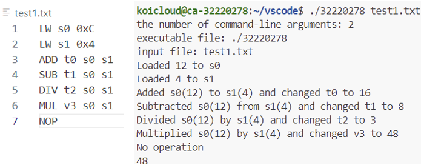
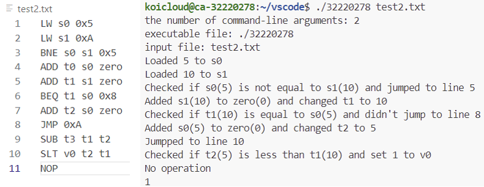

Development Environment
[VS code]
버전: 2.0.0
[Computer]
CPU: Intel Core i7-1260p 프로세서
RAM: 32GB
OS: 64bit
Windows 11

Details
 실행 화면
이 프로그램은 MIPS 명령어 형식으로 작성되어 있는 파일을 입력하면 그에 맞는 계산을 수행하는 것이 목표입니다.
명령코드는 ADD, SUB, MUL, DIV, LW, NOP, JMP, BEQ, BNE, SLT로 총 10가지를 지원합니다.
계산을 위한 레지스터(t0-t9), 로드를 위한 레지스터(s0-s7), 반환 값을 위한 레지스터(v0), ZERO 레지스터(zero)가 있습니다.
16진수(0x)의 경우 10진수로 반환하여 정수형으로 처리합니다. 해당 과정에서 값이 너무 크면 오류가 발생합니다.
해당 프로젝트는 컴퓨터구조론 수업에서의 과제로 진행하였습니다.
클릭 -> 코드 파일 보기
Home